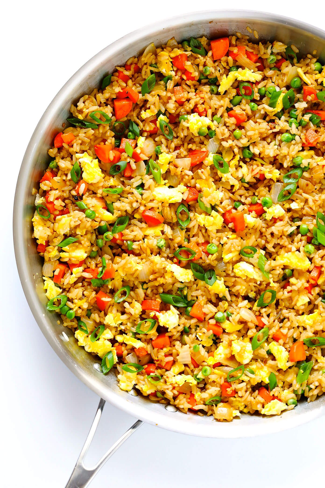

Fried Rice

Description
An asian classic, one cannot go wrong with a sumptuous bowl of fried rice!
Ingredients
- Vegetable Oil
- Day-old Rice
- Garlic
- Sweet Soy Sauce
- Fish Sauce
- Chinese Sausage
- Green Spring Oninons
- Eggs
- Salt
- Pepper
- MSG
Steps
- Mince garlic using a knife
- Heat vegetable oil in a wok
- Fry garlic until golden
- Add in chinese sausage and cook until done
- Add in 3 eggs and stir
- Add in a pinch of salt, pepper and MSG
- Put in day-old rice and break apart grains
- Add in sweet soy sauce, fish sauce and more MSG
- Garnish with spring onions